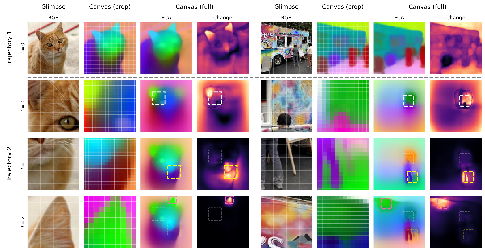

CanViT: Toward Active-Vision Foundation Models
1McGill University 2Mila – Quebec AI Institute 3Université Laval
NeurIPS 2026

Abstract
Active computer vision promises efficient, biologically plausible perception through sequential, localized glimpses, but lacks scalable general-purpose architectures and pretraining pipelines, leaving Active-Vision Foundation Models (AVFMs) underexplored. We introduce CanViT, the first task- and policy-agnostic AVFM. CanViT uses scene-relative RoPE to bind a retinotopic Vision Transformer backbone and a spatiotopic scene-wide latent workspace, the canvas. Efficient interaction with this high-capacity working memory is supported by Canvas Attention, a novel asymmetric cross-attention mechanism. We decouple thinking (backbone-level) and memory (canvas-level), eliminating canvas-side self-attention and fully-connected layers to achieve fast sequential inference and scalability to high output resolutions. We propose a label-free active vision pretraining scheme, policy-agnostic passive-to-active dense latent distillation: reconstructing scene-wide DINOv3 embeddings from sequences of low-resolution glimpses with randomized locations, zoom levels, and lengths. We pretrain CanViT-B from a random initialization on 13.2 million ImageNet-21k scenes—an order of magnitude more than previous active models—and 1 billion random glimpses, in 166 hours on a single H100. On ADE20K segmentation, a frozen CanViT-B achieves 38.5% mIoU in a single low-resolution glimpse, outperforming the best active model's 27.6% with 20x fewer inference FLOPs as well as its FLOP- or input-matched DINOv3 teacher. Given additional glimpses, CanViT-B reaches 45.9% ADE20K mIoU. On ImageNet-1k classification, CanViT-B also sets a new active-vision state of the art, with 84.5% top-1 accuracy after fine-tuning. CanViT generalizes to longer rollouts, larger scenes, and new policies. Our work narrows the wide gap between passive and active computer vision, demonstrating the potential of task- and policy-agnostic AVFM pretraining.
Citation
@article{berreby2026canvit,
title={CanViT: Toward Active-Vision Foundation Models},
author={Berreby, Yoha{\"i}-Eliel and Du, Sabrina and Durand, Audrey and Krishna, B. Suresh},
year={2026},
eprint={2603.22570},
archivePrefix={arXiv},
primaryClass={cs.CV},
url={https://arxiv.org/abs/2603.22570}
}